Banho e tosa na Penha · Rio de Janeiro
Cuidado e carinho para o seu melhor amigo.
No Pet Shop Penha, seu pet recebe atenção especial com serviços de banho, tosa e estética para cães e gatos.
- Rua Nicarágua, 295, Loja G — Penha
- Cães e gatos
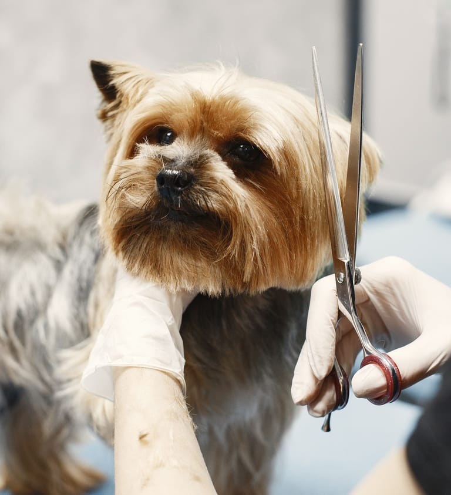
Serviços
Banho, tosa e estética para cães e gatos
Escolha o serviço e consulte valores e disponibilidade diretamente pelo WhatsApp.
-
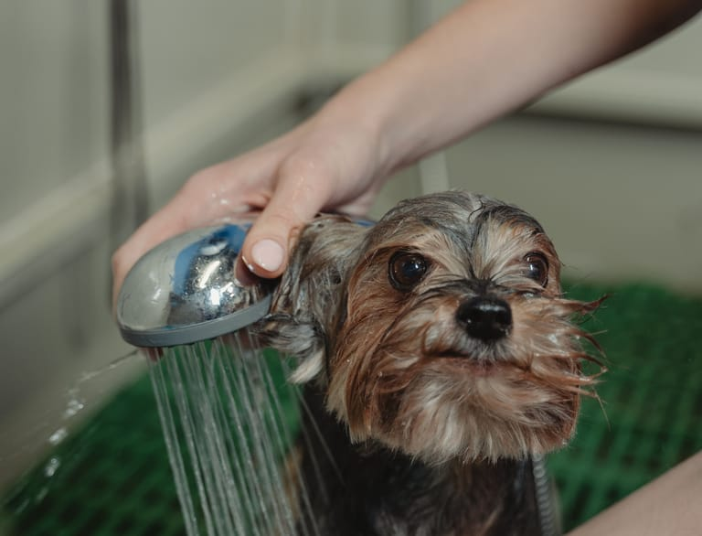
Banho
Banho para cães e gatos, com cuidado e atenção ao seu pet durante todo o atendimento.
Consultar pelo WhatsApp: Banho(abre em nova aba) -
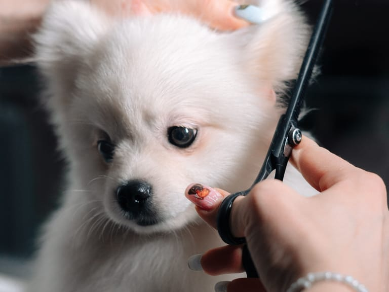
Tosa
Tosa para deixar seu pet bem cuidado. Conte como você prefere e combine os detalhes pelo WhatsApp.
Consultar pelo WhatsApp: Tosa(abre em nova aba) -
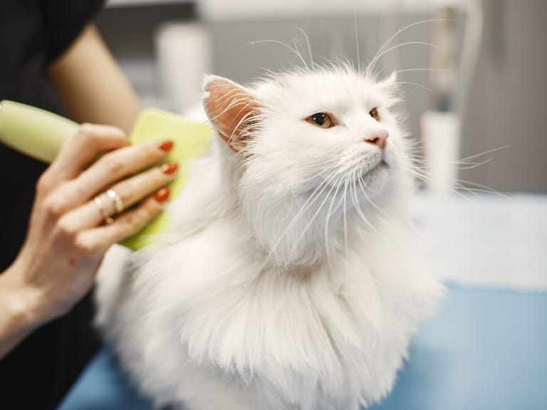
Estética em cães e gatos
Cuidados estéticos para cães e gatos, para o seu pet ficar ainda mais bonito e bem cuidado.
Consultar pelo WhatsApp: Estética em cães e gatos(abre em nova aba)
O Pet Shop Penha também trabalha com acessórios para pets. Pergunte pelo WhatsApp o que está disponível.
Perguntar sobre acessórios(abre em nova aba)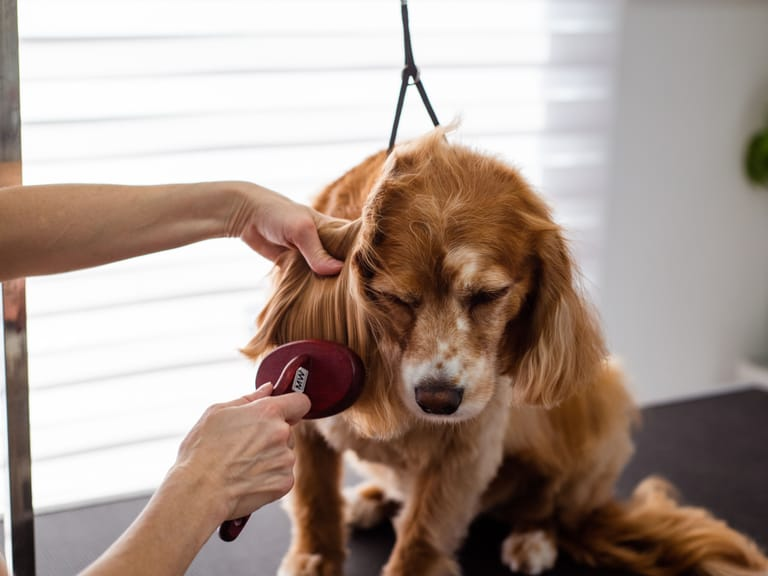
Por que escolher
Por que escolher o Pet Shop Penha
-
Atenção a cada pet
Banho, tosa e estética feitos com cuidado para o seu pet sair bonito e bem cuidado.
-
Cães e gatos
Os serviços de banho, tosa e estética atendem tanto cães quanto gatos.
-
Agendamento pelo WhatsApp
Tire dúvidas, consulte valores e combine o atendimento em uma conversa direta.
-
Na Penha, Rio de Janeiro
Loja na Rua Nicarágua, 295, no bairro da Penha.
Galeria
Inspiração para o visual do seu pet
Banho, tosa e estética para cães e gatos. Conte pelo WhatsApp como você gostaria que seu pet ficasse.
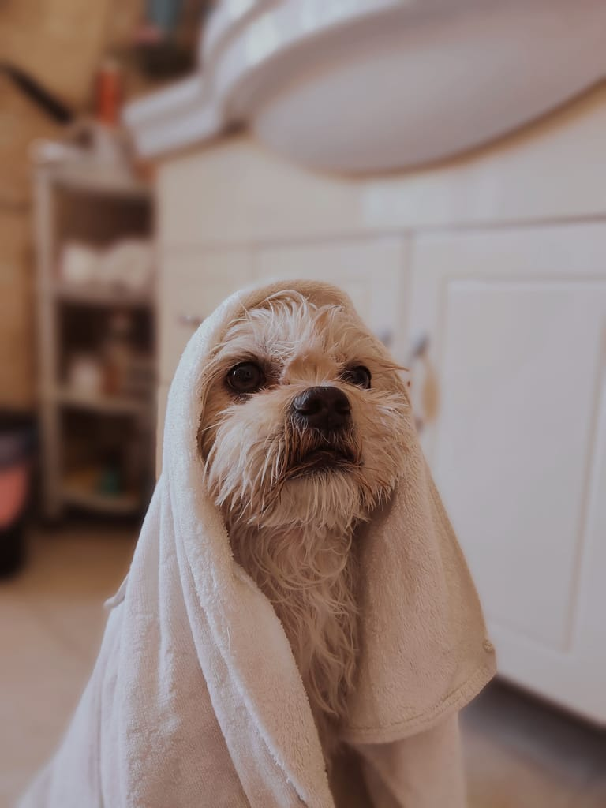
Depois do banho 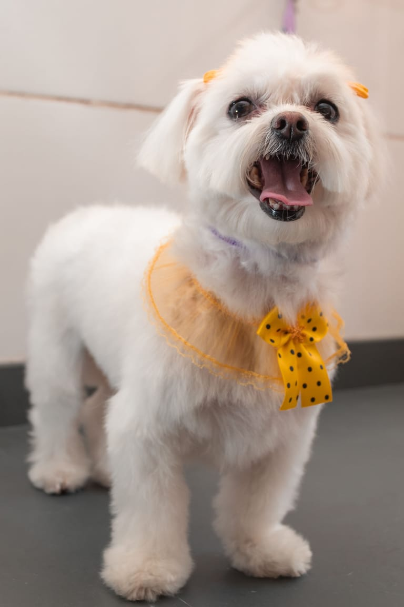
Depois da tosa 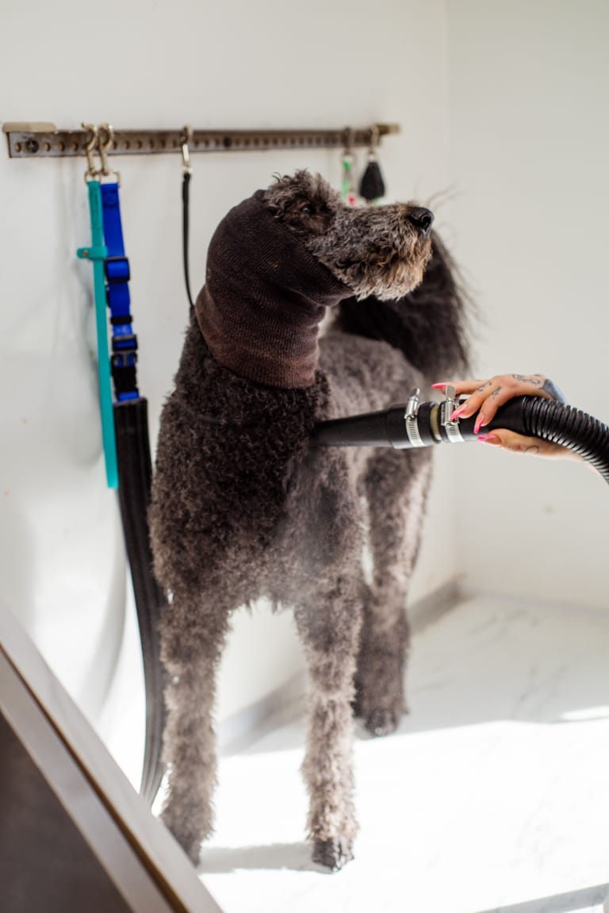
Cuidados estéticos 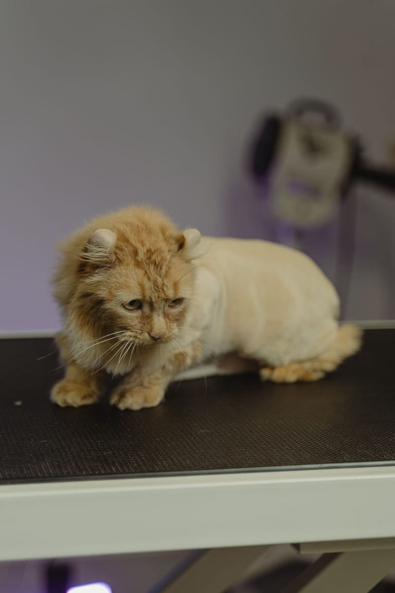
Gatos 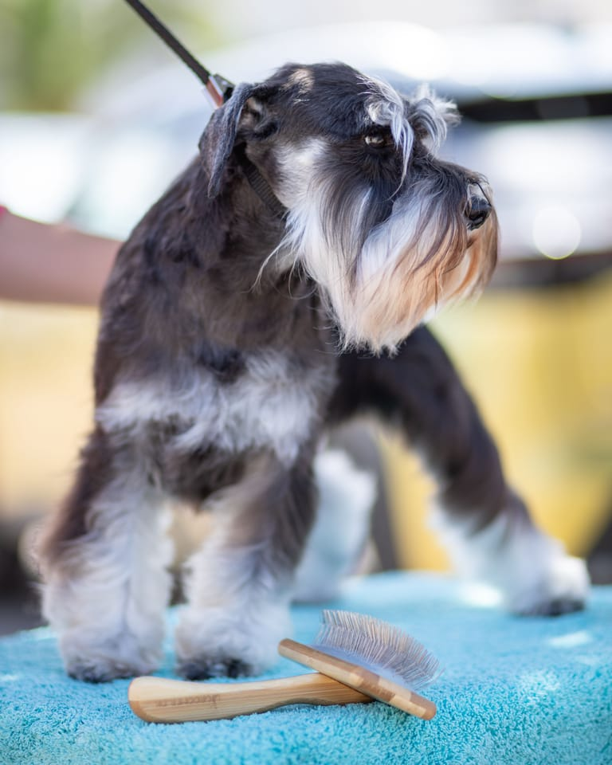
Depois da tosa 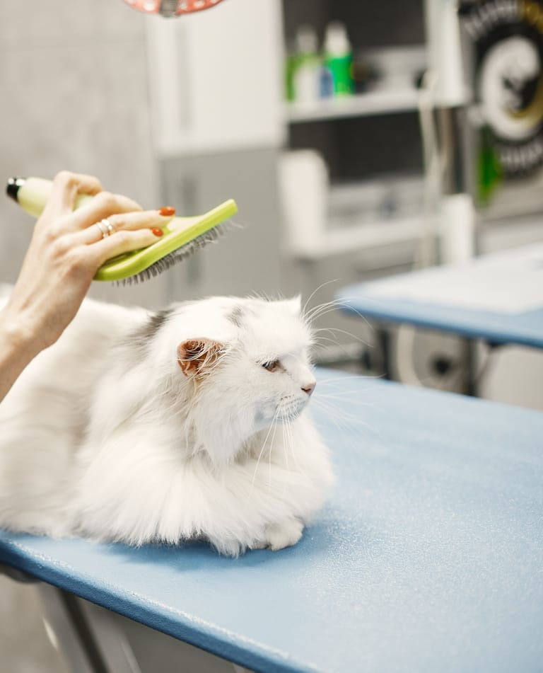
Gatos 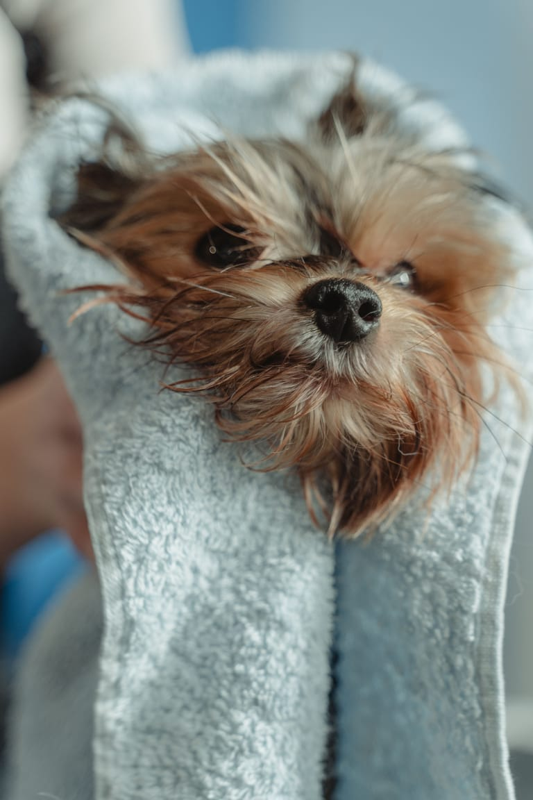
Depois do banho 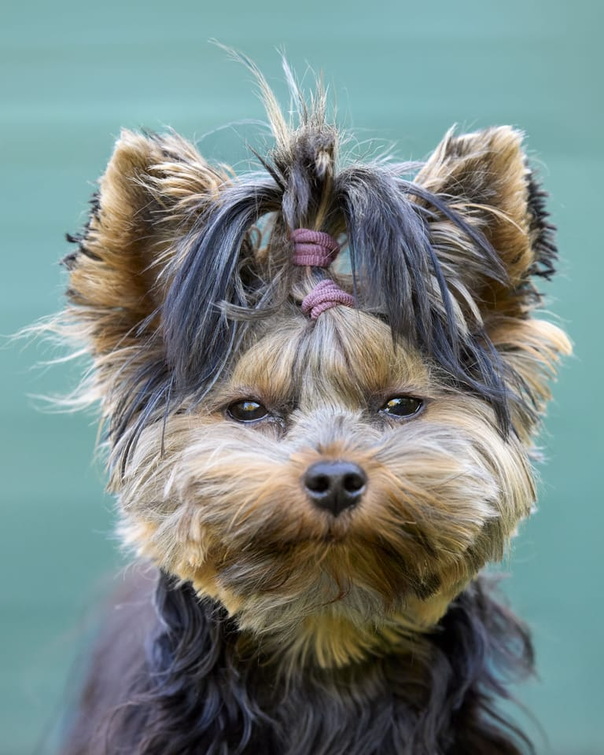
Cuidados estéticos
Fotos ilustrativas de banco de imagens. Os créditos estão no rodapé.
Como agendar
Agendar é simples
Todo o atendimento é combinado diretamente com o Pet Shop Penha pelo WhatsApp.
-
Passo 1: Chame no WhatsApp
Toque no botão e a conversa abre com uma mensagem pronta para o Pet Shop Penha.
-
Passo 2: Conte o que seu pet precisa
Diga qual serviço você procura (banho, tosa ou estética) e se é para cão ou gato.
-
Passo 3: Combine o atendimento
Confirme valores, disponibilidade e horário diretamente com o estabelecimento.
O site não faz reservas automáticas: valores, disponibilidade e horário são confirmados pelo estabelecimento.
Sobre
Sobre o Pet Shop Penha
O Pet Shop Penha é um estabelecimento especializado em banho e tosa e estética animal, localizado na Rua Nicarágua, 295, Loja G, no bairro da Penha, Rio de Janeiro.
Atende cães e gatos com serviços de banho, tosa e estética e também trabalha com acessórios para pets. Valores, disponibilidade e agendamento são combinados diretamente pelo WhatsApp.
Dúvidas
Perguntas frequentes
Como agendar um atendimento?
Toque em um dos botões “Agendar pelo WhatsApp” para abrir uma conversa com o Pet Shop Penha no número (21) 98101-2653. Informe o serviço desejado e combine o atendimento diretamente com o estabelecimento.
Agendar pelo WhatsApp(abre em nova aba)Quais serviços o Pet Shop Penha oferece?
Banho, tosa e estética para cães e gatos. O estabelecimento também trabalha com acessórios para pets.
Ver os serviçosComo consultar os valores?
Os valores são informados pelo WhatsApp. Envie uma mensagem dizendo qual serviço você procura e o Pet Shop Penha responde com as informações.
Consultar valores(abre em nova aba)Como confirmar a disponibilidade de horários?
A disponibilidade é confirmada diretamente com o Pet Shop Penha pelo WhatsApp. O site não faz reservas automáticas.
Onde fica o estabelecimento?
Na Rua Nicarágua, 295, Loja G, Penha, Rio de Janeiro — RJ, CEP 21020-050.
Ver localização(abre em nova aba)Como entrar em contato pelo WhatsApp?
Use os botões do site ou chame no (21) 98101-2653. Ao tocar em um botão, o WhatsApp abre com uma mensagem pronta, que você pode editar antes de enviar.
Abrir conversa(abre em nova aba)Contato
Localização e contato
-
Endereço
Rua Nicarágua, 295, Loja G
Penha, Rio de Janeiro — RJ
CEP 21020-050 -
WhatsApp e telefone
-
Horário de atendimento
Consulte o horário de atendimento pelo WhatsApp.
Mapa da localização
Para ver o mapa aqui, toque no botão. O mapa é do Google Maps e só é carregado depois do seu clique.
Seu pet merece esse cuidado.
Entre em contato com o Pet Shop Penha para consultar os serviços, valores e disponibilidade.
Agendar pelo WhatsApp(abre em nova aba)